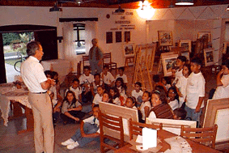
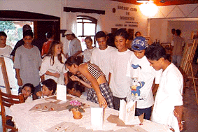
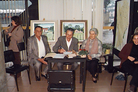
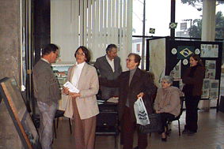
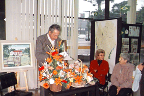
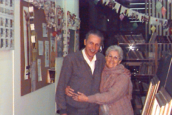

"EXPOSIÇÃO DE TELAS E LANÇAMENTO DO LIVRO NA CASA DA AMIZADE - ROTARY CLUB!"
MAIO/1998


Quando houve o lançamento do livro de poesias: "Você! Seus olhos seu sorriso...", e a exposição de telas do autor, várias classes das escolas da cidade de Morretes, visitaram o local da exposição, e lá, os alunos solicitaram que o autor contasse como foi que ele iniciou a desenhar, pintar e como fez para escrever e editar o livro.
Todas as turmas que visitaram a exposição solicitaram esta narrativa, sendo que, depois, as suas professôras iriam pedir na sala de aula que eles fizessem uma redação sobre o que eles puderam ouvir e ver.
"EXPOSIÇÃO
DE TELAS E LANÇAMENTO DO LIVRO NA BIBLIOTECA DO PORTÃO - CURITIBA-PR"
JUNHO/1998
Foto
1 - O
autor ao centro e sua mãe ao lado.
Estava presente também o Secretário da Cultura da Cidade
de Morretes
Sr.
Aluízio Cherobim
 |
 2 |
 3 |
 4 |
| VOLTAR | LIVRO 1 | LIVRO 2 | MORRETES |